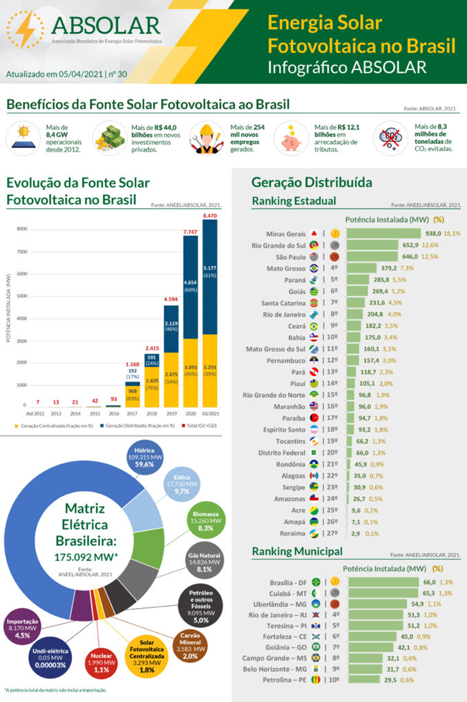

Matriz energética
Resumo
A matriz energética brasileira é uma das mais renováveis do mundo, tendo 80% representada por esse tipo de energia. No entanto, ao se tratar de energia solar ela representa pouco mais de 1% da matriz total, número esse que vem crescendo gradativamente com o passar dos anos. Tal crescimento deve-se principalmente ao aumento das instalações de painéis solares em residências e centros comerciais de pequeno porte, representando 72,6% do montante de energia solar gerada, esse aumento fez com que o Brasil em 2019 atingi-se a 16º posição no Ranking mundial de produção de energia solar.
Matriz energética brasileira

Os gráficos abaixo mostram os potenciais de geração de energia solar da Alemanha (4º Posição no ranking) e do Brasil.

Analisando o gráfico é possível observar que a área do Brasil com menor incidência de radiação solar é 40% maior que a área da Alemanha com maior incidência, o que fica claro que se trata da falta de incentivo a esse setor e das políticas de taxação a energia solar.
